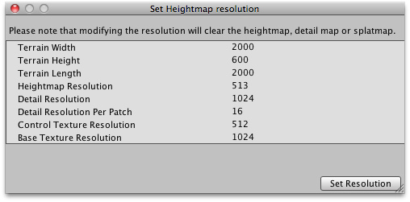

Using Terrains
 Desktop
Desktop
Creating a new Terrain
A new Terrain can be created from . This will add a Terrain to your Project and Hierarchy Views.
Your new Terrain will look like this in the Scene View:
A new Terrain in Scene View
If you would like a differently sized Terrain, choose from the menu bar. There are a number of settings that related to Terrain size which you can change from this dialog.

Setting the resolution of your terrain.
On the above image, there are values that can be changed.
These values are:
- Terrain Width: The width of the Terrain in units.
- Terrain Height: The height of the Terrain in units.
- Terrain Length: The length of the Terrain in units.
- HeightMap Resolution: The HeightMap resolution for the selected Terrain.
- Detail Resolution: The resolution of the map that controls grass and detail meshes. For performance reasons (to save on draw calls) the lower you set this number the better.
- Control Texture Resolution: The resolution of the splat map used to layer the different textures painted onto the Terrain.
- Base Texture Resolution: The resolution of the composite texture that is used in place of the splat map at certain distances.
Navigating the Terrain
Terrains work a bit differently than other GameObjects. Most notably, there is no Transform Gizmo that allows you to position the Terrain. Instead, you use Brushes to paint and manipulate your Terrain. If you do want to reposition a Terrain, you can modify its Transform Position values in the Inspector. This allows you to move your Terrain around, but you cannot rotate or scale it.
While your Terrain is selected in the Hierarchy, you can gracefully navigate the terrain with the F (focus) key. When you press F, wherever your mouse is positioned will be moved to the center of the Scene View. This allows you to touch up an area, and quickly zoom over to a different area and change something else. If your mouse is not hovering over an area of the Terrain when you press the F key, the entire Terrain will be centered in your Scene View.
Editing the Terrain
With the Terrain selected, you can look at the Inspector to see some incredible new Terrain editing tools.
Terrain Editing Tools appear in the Inspector
Each rectangular button is a different Terrain tool. There are tools to change the height, paint splat maps, or attach details like trees or rocks. To use a specific tool, click on it. You will then see a short description of the tool appear in text below the tool buttons.
Most of the tools make use of a brush. Many different brushes are displayed for any tool that uses a brush. To select a brush, just click on it. The currently selected brush will display a preview when you hover the mouse over the terrain, at the size you have specified.
You will use all of these brushes in the Scene View to paint directly onto your Terrain. Simply choose the tool and brush you want, then click & drag on the Terrain to alter it in real-time. To paint height, textures, or decorations, you must have the Terrain selected in the Hierarchy View.
Note: When you have a brush selected, move your mouse over the Terrain in the Scene View and press . This will center the Scene View over the mouse pointer position and automatically zoom in to the Brush Size distance. This is the quickest & easiest way to navigate around your Terrain while creating it.
Terrain Keyboard Shortcuts
While Terrain Inspector is active, those keyboard shortcuts can be used for fast editing (all of them customizable in Unity Preferences):
- Shift-Q to Shift-Y selects active terrain tool.
- Comma (,) and dot (.) cycle through active brush.
- Shift-comma (<) and Shift-dot (>) cycle through active tree/texture/detail object.
 iOS
iOS
This feature is currently not available for iOS targets.
 Android
Android
This feature is currently not available for Android targets.